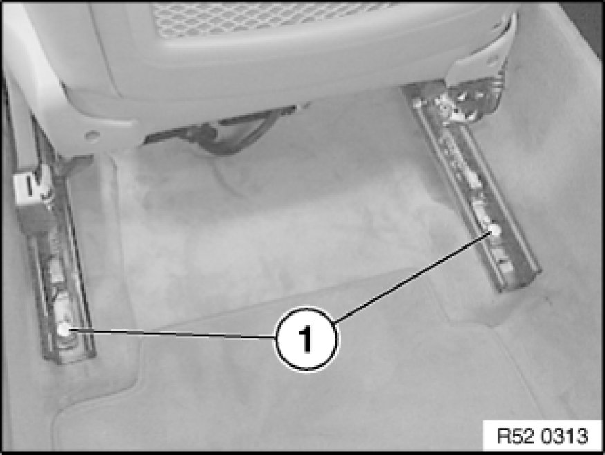
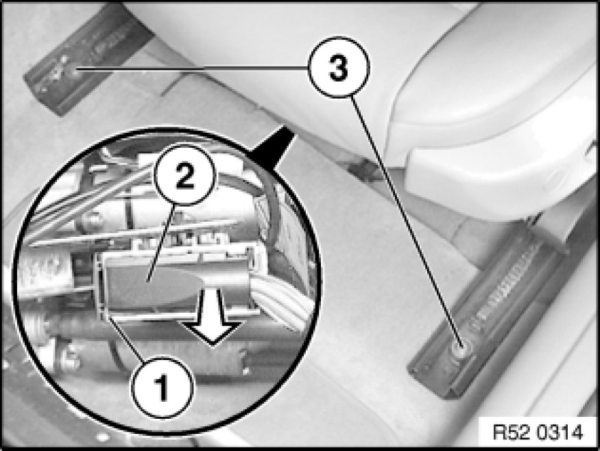

Removing and Installing Left or Right Front Seat (Normal / Manual)
52 13 000 - Removing and installing left or right front seat (normal / manual)

Necessary preliminary tasks:
- Remove head restraint Removing and Installing/Replacing Front Left or Right Head Restraint
- E92 from build date 09/08 only:
Remove crash-active head restraint

Important!
An airbag module and a pyrotechnical seat belt tensioner are installed in the front seat.
Improper handling can lead to triggering of the pyrotechnical seat belt pretensioner or side airbag, resulting in injuries.

Installation:
- Powerlock screws must be replaced and must not be reused
- Powerlock screws are mechanical screw locks with trilobular threads

Release screws (1).
Installation:
Replace screws.
Tightening torque 52 10 01AZ 52 10 Front Seats.
Move front seat as far back as possible.

Release screws (3).
Installation:
Replace screws.
Tightening torque 52 10 01AZ 52 10 Front Seats.
Unlock plug connection (1) and disconnect plug (2).
Important!
Cover door sill with protective covers (risk of damage).
Lift out front seat.
Installation:
Carpet must not get between seat rails and floor pan in area of fastening points (grating noises).

Warning!
When carrying out further work on the front seat, it is absolutely imperative to observe the safety regulations [1][2][3]Safety Precautions and General Information on handling airbag modules and pyrotechnical seat belt tensioners
Improper handling can lead to triggering of the pyrotechnical seat belt pretensioner or side airbag, resulting in injuries.